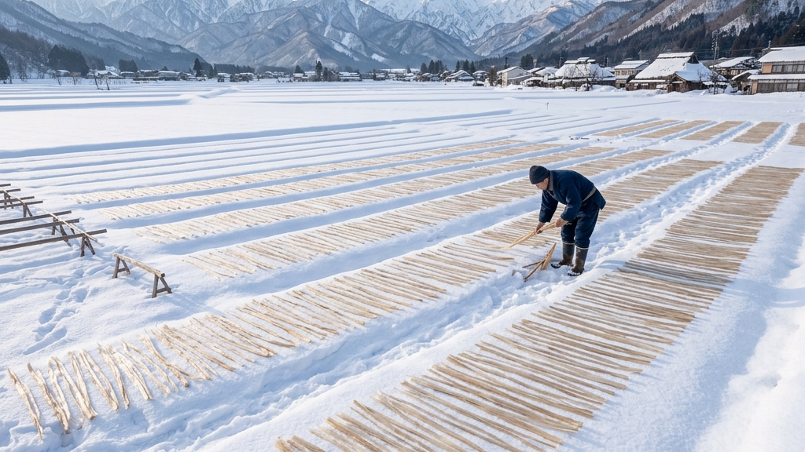
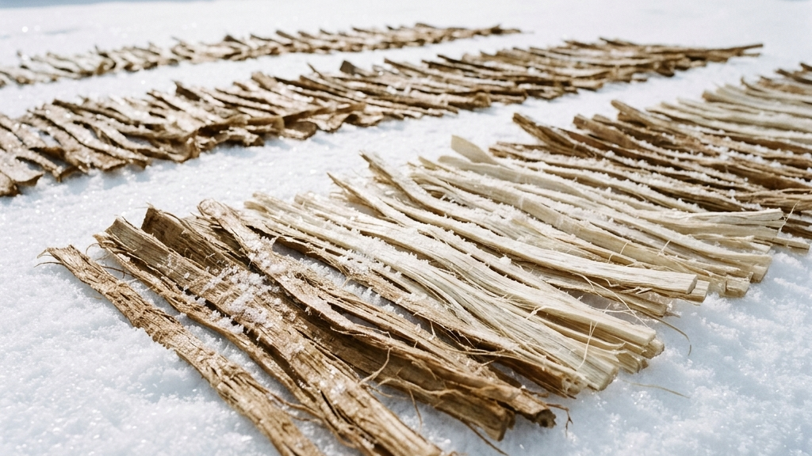
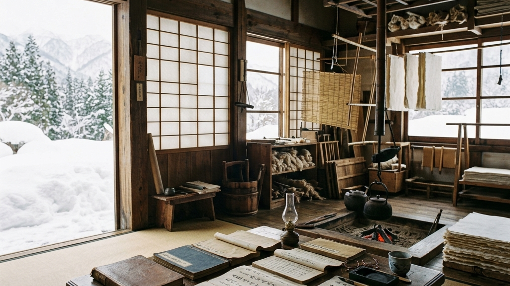
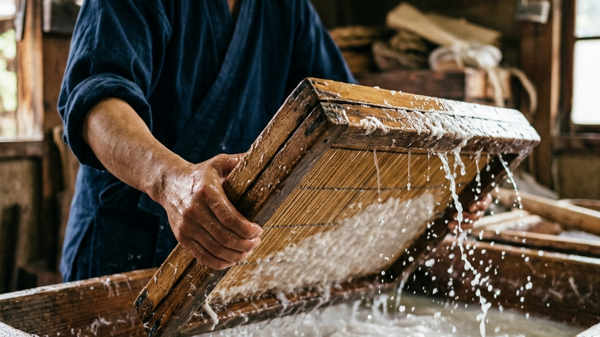
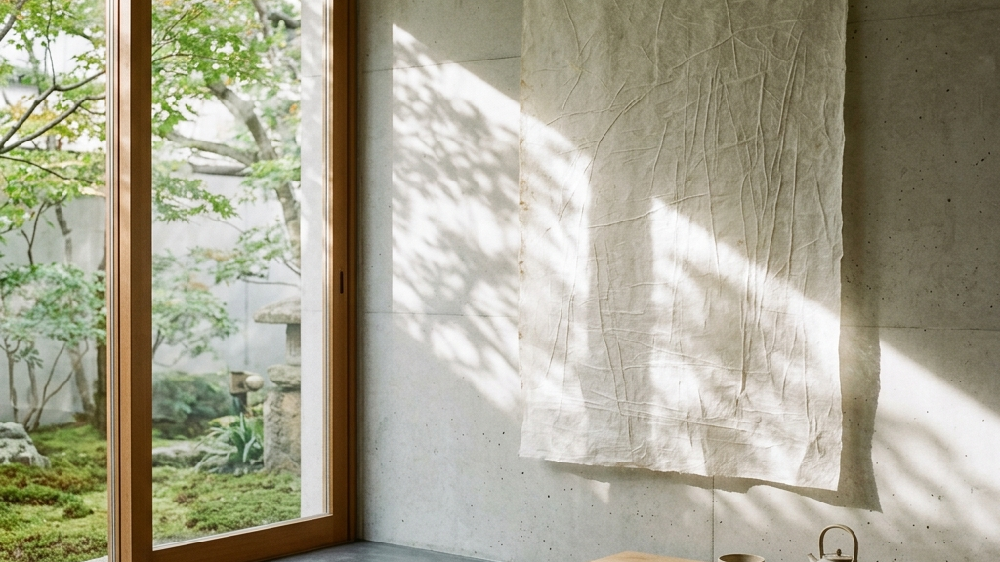

雪と対話するように、楮の繊維が純白へと染まっていく。
豪雪の地である奥信濃で三百年以上にわたり受け継がれた手漉き和紙、内山紙。
その最大の特徴である雪晒しは、自然の力だけを借りて繊維を磨き上げる、極限の引き算の美学です。
Core Principles
文明が進み、あらゆる漂白作業が化学薬品によって一瞬で片付けられる現代。
その対極において、長野県飯山市と木島平村の職人たちは、あえて非効率な極寒の雪原へ身を投じます。
雪が融ける瞬間に放つ微細な酸素の力が、繊維を純白に変えていくのです。
この奇跡のような営みが、なぜ今もなお失われずに私たちの心を揺さぶるのでしょうか。
私たちは今、あらゆる物事が瞬時に消費され、消え去っていくタイムパフォーマンスの狂騒の中にいます。
その対極にある「ただ雪の中に身を置き、時間をかけて待つ」という行為。
そこには、人間の都合やコントロールを超えた、自然との対話による本物の美学が息づいています。
今回は、内山紙の産地で十六年ぶりに誕生した二人の伝統工芸士の歩みと共に、その神秘を紐解きます。

奥信濃の厳しい冬が訪れると、飯山市や木島平村の山々は深い雪に閉ざされます。
この極寒の豪雪地帯こそが、内山紙の純白を育む唯一無二の揺り籠となります。
伝統の技法である雪晒しは、ただ雪の上に楮の皮を並べるだけの素朴な光景に見えるかもしれません。
しかし、そこには自然科学の精緻な調和と、極限まで無駄を省いた引き算の美学が息づいています。
雪晒しが行われるのは、一月下旬から三月にかけての最も寒さが厳しい時期です。
この時期の奥信濃は、連日の雪によって世界が真っ白に塗りつぶされます。
和紙の原料となる楮は、クワ科の落葉低木であり、その強靭な靭皮繊維が紙の骨格となります。
刈り取られた楮は、まず熱い蒸気で蒸され、熱いうちに皮を剥ぎ取られます。
この剥ぎ取った皮を乾燥させたものが黒皮と呼ばれ、保存性の高い原料となります。
雪晒しの前段階として、この黒皮を冷たい伏流水にさらし、夜間の凍結を利用して組織を緩めます。
水を含んだ皮が極寒の夜気によって凍り、昼の光で融けるプロセスを繰り返すのです。
凍結による膨張と融解による収縮が繰り返されることで、植物の細胞壁が物理的に緩んでいきます。
こうして柔らかくなった皮から、職人は皮がきと呼ばれる極めて根気の要る手作業を行います。
包丁のような専用の道具を使い、不要な表皮や傷、不純物を一つ一つ手作業で削ぎ落とすのです。
指先の感覚だけで不要な部位を識別し、純粋な内皮繊維だけを残す高度な職人技です。
この極めて繊細な前処理を経て、ようやく純度の高い楮繊維が雪晒しの舞台へと送られます。
職人たちは、まばゆい雪原の上に、きれいに洗った楮の繊維を編んで縄状にしたものを広げていきます。
太陽の光が降り注ぐ広大な雪原は、天然の巨大な化学反応炉へと変貌します。
広げられた繊維の上から、まるで薄い羽衣をかけるように、軽く雪をかぶせます。
太陽の光が雪原に降り注ぐと、積もった雪の表面が熱を吸収し、わずかに融け始めます。
この雪が融解する極めて微細な物理現象のなかに、漂白の真実が隠されています。
雪が水分へと変化する境界線において、太陽からの強い紫外線が水分と反応します。
この光化学反応により、水分子から水素が奪われ、活性酸素やオゾンが微量に発生するのです。
この融雪時に放たれるオゾンは、きわめて高い酸化力と色素分解能力を持っています。
楮の繊維に含まれる天然の着色色素であるリグニンや余分な樹脂成分が、このオゾンによって穏やかに分解されます。
つまり、雪晒しとは化学的な薬品を一切使わずに、太陽と水と雪の光化学反応だけで行う天然の漂白システムです。
自然界の循環が生み出すオゾンの力をそのまま借りて色素だけを吸い出す、まさに至高 of 引き算と言えます。
この間、職人たちは単に放置しているわけではありません。
天候の急変や日光の差し込み具合を細かく観察し、繊維が均一に白くなるよう見守り続けます。
職人たちは数日から一週間、楮の裏表をひっくり返しながら、雪と太陽の恵みを均等に与え続けます。
「雪晒しは、人間が白く染めるのではなく、雪と光という自然の呼吸に楮を委ねる作業です。自然の力を信じて待つことで、楮は傷つくことなく本来の強さと白さを引き出されます」
（飯山手漉き和紙の技術伝承における言葉）
現代の一般的な洋紙や製紙プロセスでは、塩素や亜硫酸ガスなどの強力な化学薬品を用いて一瞬でパルプを漂白します。
短時間で均一な白さを得られる反面、これらの強力な薬品は植物の繊維そのものを激しく痛めつけてしまいます。
薬品によって傷つき、細切れになったパルプ繊維は、紙としての強度が著しく低下します。
さらに、残留した化学薬品の影響により、洋紙は時間とともに酸性化し、黄ばみ、ボロボロに劣化していくのです。
一方、雪晒しによってゆっくりと時間をかけて漂白された内山紙の繊維は、傷や負担を一切受けていません。
楮が本来持っている、細く長い分子鎖が完璧な形で保存されているのです。
この健康な長い繊維は、手漉きの過程において縦横無尽に、かつ強固に絡み合います。
その結果、薄く漉き上げても破れず、引っ張ってもちぎれないという驚異的な強度が生まれるのです。
雪晒しによる自然な白さは、単に美しいだけでなく、日焼けに対して極めて強いという特性を持ちます。
化学漂白された紙は紫外線を浴びると急速に黄変しますが、雪晒しを経た和紙はむしろ光を吸って白さを増すことすらあります。
数百年以上の時間を経ても劣化せず、むしろ風格を増していくその強さは、非効率な自然との対話からしか生まれません。
人間の都合で時間を縮めようとしなかったからこそ、繊維は本来の生命力を損なわずにいられるのです。
この和紙が持つ優れた物性と耐久性は、日本の他の最高峰の手仕事をも根底で支えてきました。
例えば、京都の西陣織において漆と金箔を和紙に定着させて織り込む本金糸と千年の構造証明（西陣織を支える漆と和紙の定着技術）の構造がそれです。
極めて細く、かつ絶対に破断してはならない金糸を織り成す際にも、和紙が有する強靭な物理的強度が絶対的な前提とされてきました。
金箔の輝きを千年の未来へと繋ぎ止めるための土台として、和紙の耐久性が選ばれたのは歴史的な必然でした。
内山紙が誇る不変の耐久性もまた、こうした工芸的強度の極致に位置するものです。
効率と合理性を最優先する現代社会において、この雪晒しは極めて前時代的な非効率に見えるかもしれません。
化学漂白剤を使えば数時間で終わる工程に、なぜ一週間もの時間と過酷な寒冷地での労働を注ぐのか。
しかし、一見すると無駄に思えるこの時間のなかにこそ、人間の都合では作れない本物の美が宿っています。
コントロールできない自然現象の恩恵をただ謙虚に受け入れ、その速度に合わせて歩むこと。
その極限の引き算から生まれる純白は、私たちの心に静寂をもたらす静かな力強さを備えているのです。

内山紙の起源を紐解くには、江戸時代初期の寛永年間にまで時計の針を戻す必要があります。
信濃国水内郡内山村という、山深い小さな集落で、ひっそりとこの和紙の歴史は始まりました。
当時の伝承によれば、内山村の萩原甚右衛門という人物が、紙漉きの先進地であった美濃国を訪れました。
そこで命がけで手漉き和紙の製法を学び、持ち帰ったのが始まりとされています。
当時の手漉き技術は各藩の極秘事項であり、他国への技術流出は厳しく禁止されていました。
甚右衛門は、命を落とす危険を冒しながら隠密裏に修業を重ね、その技術を身体に刻み込んで持ち帰りました。
この命がけの旅があったからこそ、奥信濃の地に手漉きの種がまかれたのです。
自然の厳しさに立ち向かう職人の執念は、この創業期からすでに脈々と息づいていました。
内山村は、周囲を峻険な山々に囲まれ、冬になると数メートルもの雪に埋もれる極限の風土です。
しかし、この過酷な豪雪こそが、内山紙の類稀なる強靭さと美しさを生み出す奇跡の引き金となりました。
豪雪地帯の農民にとって、一年の半分近くを雪に閉ざされる冬は死活問題でした。
田畑を耕すことができない長大な時間のなかで、生き抜くための副業として選ばれたのが紙漉きでした。
厳しい自然環境から逃げるのではなく、その環境を逆手に取って強固な産業へと昇華させたのです。
奥信濃の冬はただ冷たいだけでなく、非常に清冽な雪解けの伏流水が豊富に湧き出ます。
この極低温の軟水は、楮の繊維を引き締め、雑菌の繁殖を抑えるためにこの上ない恩恵をもたらしました。
冷たい水の中で何度も楮を振り洗いする作業は、過酷ですが、不純物のない透き通った紙を作るために不可欠でした。
信濃国水内郡内山村において、萩原甚右衛門が和紙の手漉き技術を導入。厳しい冬の副業として楮の栽培と紙漉きが定着し、産地の基盤が築かれました。
雪晒しによる白さと強靭な耐久性が江戸の町で絶大な評価を獲得。障子紙は大流行し、信州を代表する特産品として確固たる地位を築きました。
昭和五十一年、国の伝統的工芸品に指定。化学漂白に頼らない持続可能で美しい紙として、現代アートや空間デザインの分野で世界中から再注目されています。
内山紙が江戸の町で圧倒的な名声を博した理由は、その驚異的な実用性と耐久性にありました。
原料に純粋な楮のみを使用し、雪晒しによって仕上げられた紙は、内山障子紙として絶大な支持を集めました。
雪晒しのおかげで日焼けしにくく、陽の光を浴びても障子が赤茶色に変色することがなかったのです。
江戸の町民たちは、そのいつまでも白く、室内を明るく保つ内山紙の障子を競って買い求めました。
まだ電気のない江戸の暮らしにおいて、障子が反射する光は、室内の明るさを決定づける極めて貴重なエネルギーでした。
雪晒しによって楮繊維を傷つけずに白く磨き上げた内山紙は、室外の光を優しく、しかし強力に室内へと拡散させました。
部屋の奥まで届くその純白の反射光は、薄暗い和室の中に静謐な光の空間を作り出し、人々の心を温かく包んだのです。
単なる遮光の建具ではなく、室内に上質な明かりを呼び込むための空間装置として、内山紙は愛されました。
さらに、内山紙は高い通気性と天然の調湿効果を備えていました。
木造家屋が密集し、湿度の高い日本の住環境において、この障子紙は呼吸する壁として機能したのです。
室内の余分な湿気を吸い、乾燥時には水分を放出する。その知恵が江戸の暮らしを快適に支えていました。
また、破れにくく水にも強いという強靭さから、商人の命とも言える大福帳や公文書にも広く使用されました。
火災の多かった江戸では、火事の際に大福帳を井戸に投げ込んで焼失を防ぐ習慣がありました。
並大抵の紙であれば水に溶けてバラバラになり、墨も流れて記録はすべて失われてしまいます。
しかし、純粋な楮繊維をネリ（トロロアオイ）で漉き上げた内山紙は、水没しても決して破れませんでした。
井戸から引き上げ、風に当てて乾かせば、墨文字が鮮明なまま復元できたのです。
この大福帳の水没耐久性は、当時の商人たちにとって究極の信用と安全の保証でした。
実用の極致にある美しさ、すなわち用の美が、こうした過酷なファクトによって完璧に証明されています。
しかし、明治期に入ると、西洋から安価で大量生産が可能な洋紙が流入し始めます。
木材パルプを用いた機械漉きの洋紙は、手漉き和紙の市場を急速に浸食していきました。
多くの和紙産地が近代化の波に呑まれ、生産規模を縮小、あるいは廃業を余儀なくされました。
かつては数百軒を数えた内山紙の漉き元も、時代とともに数軒にまで減少してしまいました。
しかし、内山紙の持つ不変の純白と強固な物性は、現代において新たなアートの文脈と交差し始めています。
その極上のテクスチャーは、実用的な障子紙という枠組みを超えて、世界の空間デザインの最前線で選ばれています。
例えば、モナコ公国を舞台にしたアートプロジェクトである和紙と廃ガラスの空間芸術「縁桜」 モナコ公国を魅了した株式会社アルチザンの挑戦のように、日本の伝統和紙は海外のラグジュアリーな空間装飾において劇的な変化を遂げています。
廃ガラスの透過光と和紙の柔らかい繊維が織り成す陰翳は、西洋の美術関係者に大きな衝撃を与えました。
内山紙が三百年以上守り抜いてきた雪晒しの純白もまた、こうした現代空間における芸術的装置として、極めて高いポテンシャルを秘めています。
自然の厳しさを受け入れ、その寒さと雪を極上の美へと翻訳した奥信濃の先人たち。
その歴史は、単なる紙の製造史ではなく、人間が自然とどのように共生し、美を生み出すかという知恵の結晶です。
過酷な冬を生き抜くための手段が、やがて時代を超えて愛される美へと昇華していく。
この知恵の蓄積こそが、私たちが学ぶべき真の持続可能性の形ではないでしょうか。
私たちは今、その歴史の地層の上に立ち、千年の未来へと繋ぐべき本物の価値を見つめ直しています。

二〇二六年二月二十五日、奥信濃の和紙産地に、長く待ち望まれた静かな歓喜の瞬間が訪れました。
経済産業大臣指定の伝統的工芸品である内山紙の伝統工芸士に、二人の新たな職人が認定されたのです。
飯山市の平田真澄さんと、木島平村の上埜暁子さん。
この二名の誕生は、内山紙の産地において実に十六年ぶりという、極めて重い歴史的快挙でした。
産地の灯を守り続けることは、個人の人生を賭した重責でもあります。
伝統工芸士という称号は、決して一朝一夕で手に入る生易しいものではありません。
産地において最低十二年以上の実務経験を積み、その上で高度な実技試験と知識試験を突破する必要があります。
実技試験では、数十枚に及ぶ和紙をその場で漉き上げ、そのすべての厚みや重量が均一でなければなりません。
手の感覚だけで、わずか数ミリグラムの繊維の量の誤差をも正確に均す精密な身体技法が求められます。
少しでも漉きムラがあったり、四隅の厚みが不均一であれば、その瞬間に不合格となります。
十六年もの間、新たな合格者が現れなかったという事実は、技術継承の過酷さを物語っています。
生活の保障が難しい現代において、気が遠くなるほど非効率な手仕事に身を捧げる職人は極めて稀有だからです。
多くの若者が、修行期間の長さと収入の不安定さに耐えかねて、途中で夢を諦めて去っていきます。
しかし、新しく認定された二人の歩みは、冷めかけた伝統の炉に再び強烈な熱量を吹き込みました。
特に平田真澄さんのバックグラウンドは、伝統工芸の世界において非常にユニークな光を放っています。
京都府出身の平田さんは、もともとは流行の最先端を行くアパレル業界で活躍していました。
華やかで、消費のサイクルが極めて早い衣服の世界から、なぜ正反対の、泥臭く時間をかけて紙を漉く世界へと移ったのでしょうか。
アパレル業界は、シーズンごとに新しいデザインが生み出され、また急速に消費され、捨てられていく世界です。
平田さんは、その目まぐるしく変化し、消費されるだけのサイクルのなかに、ある種の違和感を抱いていました。
毎週のように入れ替わるファストファッションの服、役目を終えて大量に廃棄される布地への言葉にならない葛藤。
そんな中、「漉いたら千年以上残る」という圧倒的な物質の強さと永遠性を備えた内山紙に出会ったのです。
一生をかけて向き合う価値のある、時を越えて残る本物を作りたいという静かな執念が芽生えた瞬間でした。
使い捨ての文化に対するアンチテーゼが、彼女をここへ導いたのかもしれません。
平田さんは決断し、長野県飯山市へと移住しました。
そして、先人たちが築き上げてきた手漉きの型を、プライドを捨てて徹底的に身体にインストールしたのです。
何年も何年も、冷たい水に手を浸し、腰を落として漉き桁を揺らし続ける日々。
現在は飯山手漉き和紙体験工房などで活動し、自身の技術向上のみならず、後進の育成に心血を注いでおられます。
アパレルという一瞬の流行を追う世界から、千年の耐久性を持つ和紙の世界へ。
この劇的な転身の裏には、消費され尽くす現代に対する、ものづくりとしての本質的な問いかけがあります。
一方、木島平村の上埜暁子さんは、寡黙に楮と向き合い、手漉きの精度を極限まで磨き上げてきました。
上埜さんは、自然の音しか聞こえない極寒の工房で、水の揺らぎと楮繊維のわずかな抵抗を手のひらで察知します。
冷水が張られた漉き舟の前に立つとき、水と自分の呼吸が完全に同調する静かな瞬間が訪れます。
目で見るのではなく、指先の神経と水の対話によって、均一で強靭な一枚の紙を漉き上げていくのです。
まさに、五感のすべてを和紙漉きという行為に集中させ、自己を極限まで純化させる修練の日々でした。
職人の手仕事には、言葉にできない領域の真実が宿っています。
| 職人名・産地 | 背景とアプローチ | 技術への執念と継承の形 |
|---|---|---|
| 平田真澄氏（飯山市） | 京都のアパレル業界から奥信濃へ移住。異分野の感性を融合。 | 体験工房での指導を通じて後進を育成。内山紙の裾野を広げる。 |
| 上埜暁子氏（木島平村） | 木島平村で地道に手漉き技術を磨く。徹底的な職人基質。 | 楮の選定から雪晒し、紙漉きに至る三百年の技法を純粋に極める。 |
この二人の姿勢は、自らの自我を抑え、素材と技術のなかに自己を溶け込ませていく営みそのものです。
それは、千年の静寂の中で墨を作り続ける職人たちの精神を語った奈良墨の継承（自己を消し技術を宿す千年の静かなる闘いと美学）の姿勢と深く符合します。
自分の個性をアピールするのではなく、歴史が磨き上げた型を完璧に再現することに命をかける。
その自己消去のプロセスの先にこそ、言葉を超えた圧倒的な強度が宿るのです。
アパレルという衣服のデザインも、和紙という平面のテクスチャーも、本質的な根底は同じです。
どれほど时代が変わろうとも、人間の身体感覚に寄り添い、触感に訴えかけるものは決して滅びません。
平田さんがアパレルから和紙へと身を転じたのも、そうした触覚的本物への飢えがあったからかもしれません。
消費される流行ではなく、時を超える物質に魂を込めることこそが、究極の自己表現だからです。
私たちは今、急速なデジタル化とAIの普及によって、あらゆる物理的な手仕事の喪失に直面しています。
だからこそ、この十六年ぶりのバトンタッチは、単なる地方ニュースの枠を遥かに超えた意味を持ちます。
それは、かつて先人たちが紡いだ記憶と身体感覚を、次の世代へと確かに手渡す責任の表明です。
それはまさに、手技という名の記憶を繋ぐ（次世代の工芸職人に託された1,000年先の未来）で問いかけた、歴史の守り人たちの挑戦そのものです。
十六年という歳月をかけて灯された新しい小さな火が、奥信濃の雪原を静かに照らし始めました。
その火を絶やすことなく、さらに次の百年、千年の未来へと繋いでいくこと。
平田さんと上埜さんが漉き上げる一枚の白い紙は、私たちの未来を優しく、しかし強固に包み込んでいます。

雪晒しという奇跡の漂白と、十六年ぶりにバトンを繋いだ二人の若き伝統工芸士たちの歩み。
それらは、現代の私たちが忘れかけている極めて重厚な時間の美学を提示しています。
私たちは今、あらゆる物事が瞬時に解決し、数秒の遅れすら許さないタイムパフォーマンスの狂騒の中にいます。
手っ取り早い正解や一時しのぎの効率化ばかりを追い求める現代社会において、内山紙の営みは強烈なアンチテーゼとして突き刺さります。
私たちは、インターネットやアルゴリズムによって、瞬時に答えを与えられる生活に慣れすぎてしまいました。
その結果、行間を読む力や、答えのない曖昧なものに対峙し続ける思考体力を失いつつあります。
すぐに結論を求め、白黒をつけようとする現代の病に対し、雪晒しは待つことの圧倒的な豊かさを教えてくれます。
雪の力という、人間が到底コントロールすることのできない圧倒的な自然現象。
待つことは、無駄ではなく成熟へのプロセスなのです。
それを力でねじ伏せようと制御するのではなく、ただ謙虚に受容し、その呼吸に楮を合わせる。
雪が融ける静かな時間をじっと待つことでしか、繊維を傷つけない不変の純白は生まれません。
思い通りにならない時間の摩擦や、進捗が見えない恐怖をそのまま引き受ける覚悟。
このコントロールを手放した受容の姿勢こそが、曖昧な焦りや不安を乗り越え、本物の強さを育む唯一の道なのです。
これは、私たちの生き方や、組織を率いる人間の覚悟においても全く同じことが言えます。
すべてのプロセスを数値やKPIによって完璧に管理しようとすれば、一時的な安心は得られるかもしれません。
しかし、それは組織の自責の心を奪い、想定外の事態に耐えられない、しなやかさを欠いた硬直した集団を生みます。
あえて進捗が見えない恐怖を受け入れ、泥臭い摩擦や非効率を許容する余白を残すこと。
自然の移り変わりに身を任せるように、人の勝手に育っていく時間を守り、支える側に回ること。
その絶対的な受容からしか、本当に自立した強い組織や、千年の未来に耐えうる文化は生まれません。
あえてペースを落とし、思い通りにならない余白を受け入れるからこそ、予測不能な強風に耐える組織が育つのです。
管理の手を手放し、相手の成長の速度を信じて見守る時間。
それは一見すると進捗のない無駄な時間に見えますが、本物の地力を養うためには絶対に必要なプロセスです。
マネジメントにおける管理の余白も、雪晒しにおける受容の美学も、その本質は完全に一致しています。
また、アパレル業界という流行の最前線から奥信濃へ身を投じた平田氏の生き様も、重要な示唆を与えています。
自分だけの個性や薄っぺらなオリジナルを声高に主張する前に、ちっぽけなプライドを捨てて先人の型を徹底的に真似る。
三百年の歴史が磨き上げたその手漉きの型を完璧に身体にインストールする守破離のプロセス。
リスクを取ってその型に自分自身を馴染ませ、その極限の模倣を愚直にやり抜くこと。
その気の遠くなるような実践の壁を越えた先にこそ、模倣ではない本物のオリジナルが立ち上がるのです。
型をインストールしないままの自己流は、ただの独りよがりに過ぎず、時を超える強度を持ち得ません。
時間をかけて地力を養うからこそ、時代が移り変わっても揺るがない強固な足場を築くことができます。
この非効率な手仕事から生まれる内山紙は、現代の洗練された日常空間に静かに融和します。
陽光を通した際の柔らかな透過光、繊維が複雑に絡み合った影の揺らぎ、および触れた時の確かな温もり。
それらは、単なる実用の平面ではなく、空間の中に静謐な余白を創り出す芸術的な存在です。
この余白こそが、忙しない日々に追われる私たちの感性を優しく耕し、深い呼吸を取り戻させてくれます。
こうした手仕事が持つ静かな佇まいは、現代における真のラグジュアリーの再定義に繋がります。
それは、派手な装飾や分かりやすい記号で他者と競い合うための消費物ではありません。
作り手の執念と時間が封じ込められた、無言の強度に対峙することの充足感です。
この価値観は、物質の裏にある時間を所有する思想を説いた手仕事が放つ静謐なる存在感（「百工のデザイン」展が問いかける新しいラグジュアリー）の哲学と深く響き合っています。
自然の厳しさを受け入れ、非効率の中にこそ本質があることを証明した奥信濃の内山紙。
十六年ぶりに誕生した伝統工芸士たちの手によって、その美学は今、千年の未来へと解き放たれました。
私たちは、その純白に触れるとき、静寂の中に灯る職人たちの揺るぎない覚悟と祈りを受け取ります。
それは、時の重みに耐え抜き、人々の生活と誇りを包み込みながら、静かに、しかし力強く生き続ける本物の美。
Reference:
内山紙の純白を育む雪晒しの神秘と16年ぶりの伝統工芸士誕生の背景
伝統を身に纏い、1,000年先の未来へ遺す。Kakeraが織り上げる西陣織アロハシャツの哲学と私たちの物語は、CONCEPT、Kakera Aloha、およびABOUTよりご覧いただけます。